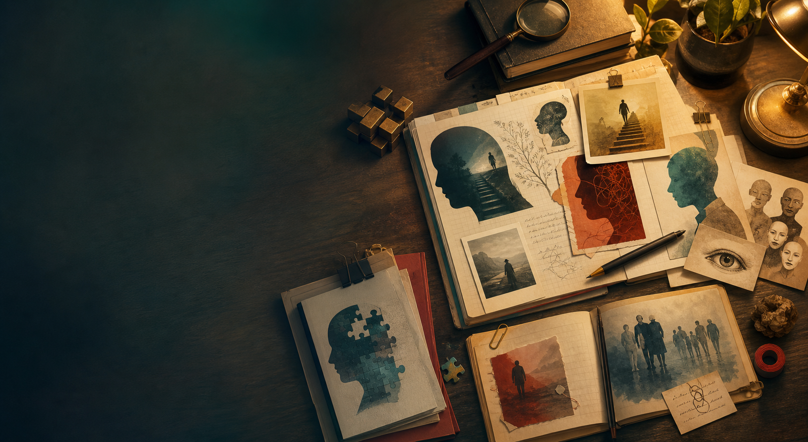

Case Study
The friend who always says yes, then disappears
A quiet look at people-pleasing, avoidance, and the awkward gap between wanting approval and needing space.
Read the breakdown
Life Psychology Story Hub
Psychology stories that explain why people act the way they do.
Real-life stories, strange scenarios, psychological breakdowns, and lessons about human behavior, told in a way that is curious, readable, and grounded.
Start here
Psych for Fun is built for readers who enjoy asking why people overthink, copy, freeze, trust, avoid, forgive, or suddenly change. Each piece begins with a relatable story and ends with a clearer way to notice behavior in daily life.
Featured reads
Case Study
A quiet look at people-pleasing, avoidance, and the awkward gap between wanting approval and needing space.
Read the breakdownTrivia
The brain treats uncertainty like unfinished business, which is why unanswered messages can feel strangely heavy.
Browse quick factsStory Library
Explore short story prompts about trust, status, memory, belonging, and emotional reactions.
Open the libraryFor curious readers
Every story is written for education and reflection. The goal is to make human behavior easier to talk about without labeling real people or pretending one story explains everyone.